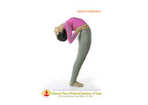
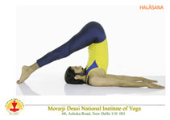

20 Essential Yoga Poses
Practice these poses to enhance your energy flow and overall well-being

Ardhachakrasana
Half Wheel Pose - Improves flexibility of the spine, strengthens back muscles, and opens the chest. It also helps reduce stiffness in the shoulders and improves posture.

Bhujangasana
Cobra Pose - Strengthens the spine, stretches the chest and shoulders, and improves flexibility of the back. It also helps relieve stress and improve posture.

Chackrasana
Wheel Pose - Improves flexibility of the spine, strengthens the arms and legs, and opens the chest. It also increases energy levels and helps improve overall body balance.

Ardh-Halasana
Half Plow Pose - Strengthens the abdominal muscles, improves digestion, and enhances flexibility of the lower back. It also helps improve blood circulation and strengthens the core.

Matyasana
Fish Pose - Stretches the chest, neck, and abdomen while improving flexibility of the spine. It helps relieve tension in the neck and shoulders and promotes better breathing.

Natrajasana
Lord of the Dance Pose - Improves balance and flexibility while strengthening the legs, ankles, and core muscles. It also opens the chest and shoulders and helps improve body coordination.

Paschimottasana
Seated Forward Bend Pose - Stretches the spine, shoulders, and hamstrings while improving flexibility. It helps calm the mind, reduce stress, and improve digestion.

Salabhasana I
Locust Pose - Strengthens the back muscles, improves posture, and increases flexibility of the spine. It also helps tone the legs and stimulates abdominal organs.

Sarvangasana
Shoulder Stand Pose - Improves blood circulation, strengthens the shoulders and neck, and enhances overall body balance. It also helps calm the mind and supports healthy functioning of the thyroid gland.

Sasankasana
Rabbit Pose - Helps relax the body and calm the mind. It stretches the back muscles, improves flexibility of the spine, and reduces stress and tension.

Setu Trikonasana
Triangle Pose - Stretches the legs, hips, and spine while improving balance and stability. It helps strengthen the thighs and improves flexibility of the body.

Ushtrasana
Camel Pose - Stretches the chest, abdomen, and front of the body while improving flexibility of the spine. It helps strengthen the back muscles and improves posture.

Vajrasana
Thunderbolt Pose - A simple seated yoga pose that improves digestion and strengthens the lower back and legs. It also helps calm the mind and improve posture.

Ardha Siddhasana
Accomplished Pose - A traditional seated yoga posture used for meditation and breathing exercises. It helps improve concentration, calm the mind, and maintain proper posture during meditation.

Gomukhasana
Cow Face Pose - Stretches the shoulders, chest, hips, and thighs while improving flexibility of the body. It helps relieve tension in the shoulders and improves posture.

Simhasana
Lion Pose - Helps release tension in the face, chest, and throat. It improves breathing, reduces stress, and strengthens the muscles of the face and throat.